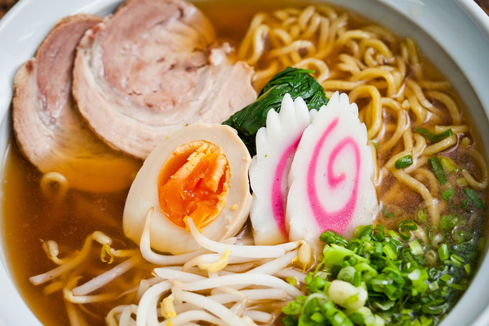

Ramen Recipe

Use chicken, noodles, spinach, sweetcorn and eggs to
make this moreish Japanese noodle soup,
for when you crave something comforting yet light and wholesome.
Ingredients:
- 700ml chicken stock
- 3 garlic cloves, halved
- 4 tbsp soy sauce, plus extra to season
- 1 tsp Worcestershire sauce
- thumb-sized piece of ginger, sliced